[35] [Thăng chức] Gia nhập Chính phái
Thăng chức lần 2 – Chính phái
Bước 1 Nhận nhiệm vụ tại Môn Chủ Huyền Bột

Bước 2 Sau đó đi đánh Sơn Tặc Cự Phủ thu thập Rìu Sơn Tặc 10/10

Bước 3 Gom đủ 10 Rìu Sơn Tặc thì mang giao cho Môn Chủ Huyền Bột
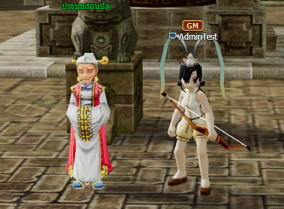
Bước 4 Tiếp theo gặp Kim Hương Ngọc nhận nhiệm vụ Thư Tiến Cử của Huyền Bột Phái (35)
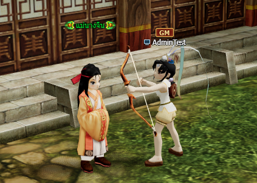
Bước 5 Tiếp theo gặp Ngân Kiều Long nhận nhiệm vụ Thư Tiến Cử của Huyền Bột Phái (35)
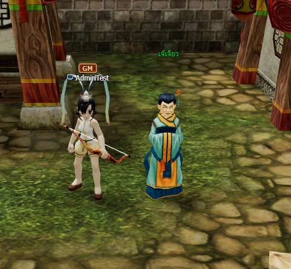
Bước 6 Gặp Vi Đại Bảo nhận nhiệm vụ Thư Tiến Cử của Huyền Bột Phái (35)
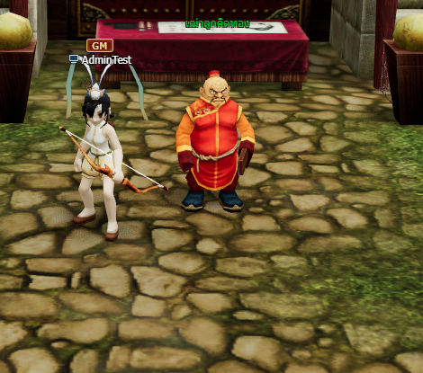
Bước 7 Đi đánh Sơn Tặc Cự Phủ , Sơn Tặc Đầu To (con nào cũng được), thu thập Tang Vật Sơn Tặc 5/5
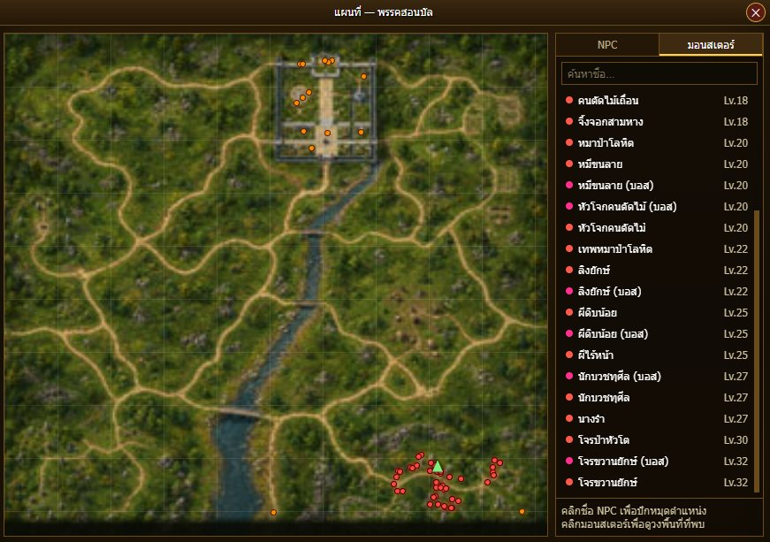
Bước 8 Gom đủ Tang Vật Sơn Tặc 5/5 thì quay về trả nhiệm vụ cho Vi Đại Bảo

Bước 9 Gặp Đao Kiếm Tiếu nhận nhiệm vụ Thư Tiến Cử của Huyền Bột Phái (35)
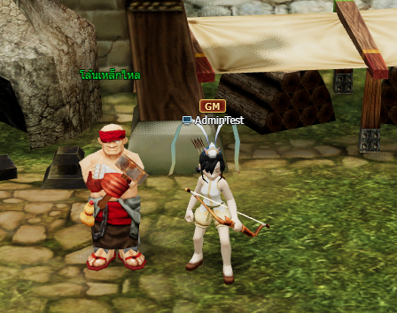
Bước 10 Gặp Bình Thập Chỉ nhận nhiệm vụ Thư Tiến Cử của Huyền Bột Phái (35)
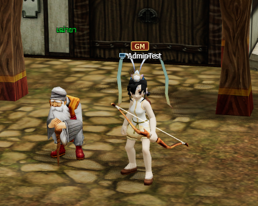
Bước 11 Chọn phe tại Hoa Hữu Khuyết ở Lôi Đài Huyền Bột
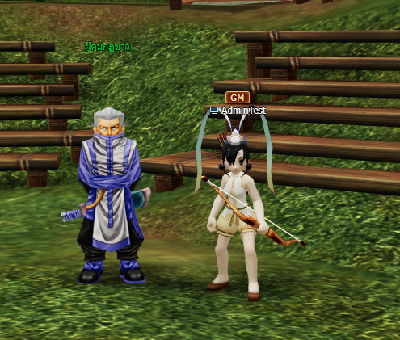
Bước 12 Dịch chuyển đến Liễu Chính Quan, nói chuyện với Quan Chủ Liễu Như

Bước 13 Đi đánh Huyết Hùng Sơn Hoàng Hổ Bạch Văn Hổ mỗi loại 10 tấm
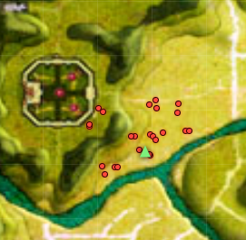
 | Sơn Hoàng Hổ | x10 |
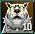 | Bạch Văn Hổ | x10 |
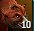 | Huyết Hùng | x10 |
Bước 14 Quay về trả nhiệm vụ cho Quan Chủ Liễu Như

Bước 15 Nhận nhiệm vụ tại Tiểu Xuân Thủy (Liễu Chính Quan)
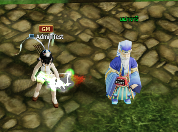
Bước 16 Gặp Hồng Phụng Hoàng tại Liễu Chính Quan
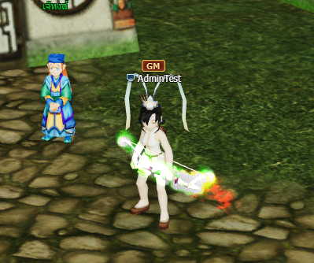
Bước 17 Gặp Quan Chủ Liễu Như
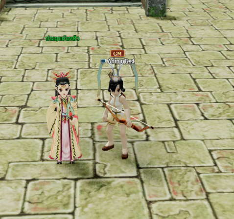
Bước 18 Dịch chuyển về Huyền Bột Phái, gặp Ngân Kiều Long
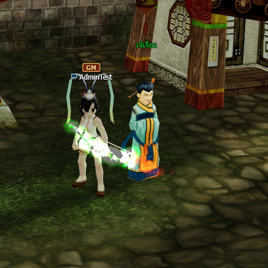
Bước 19 Gặp Vi Đại Bảo tại Huyền Bột Phái

Bước 20 Sau đó dịch chuyển đến gặpQuan Chủ Liễu Như để hoàn tất thăng chức lần 2